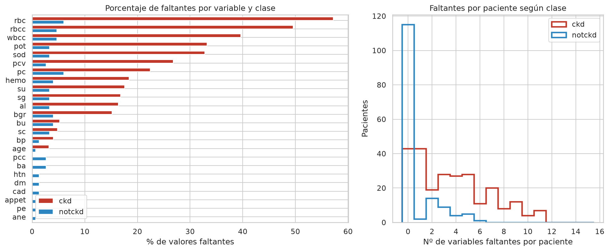
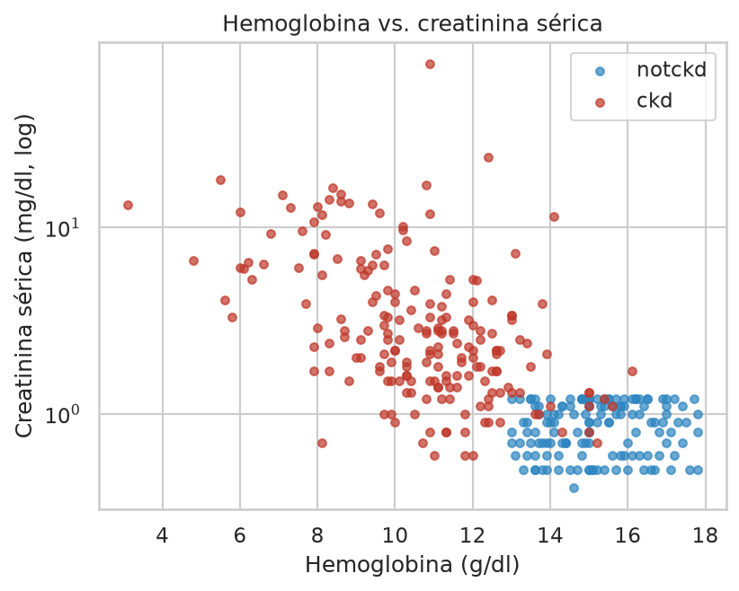
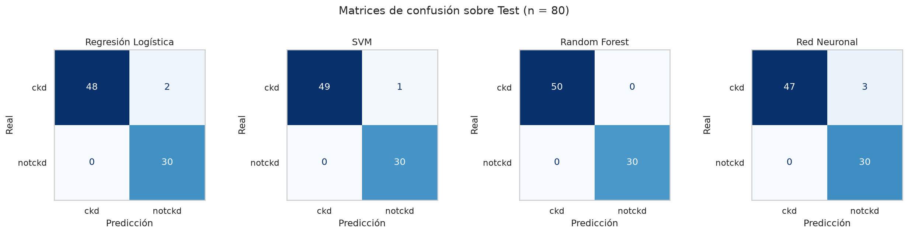
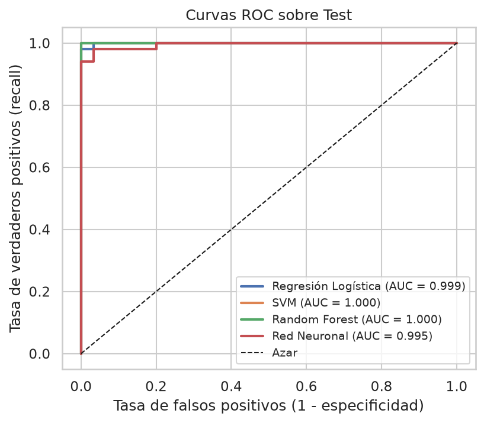
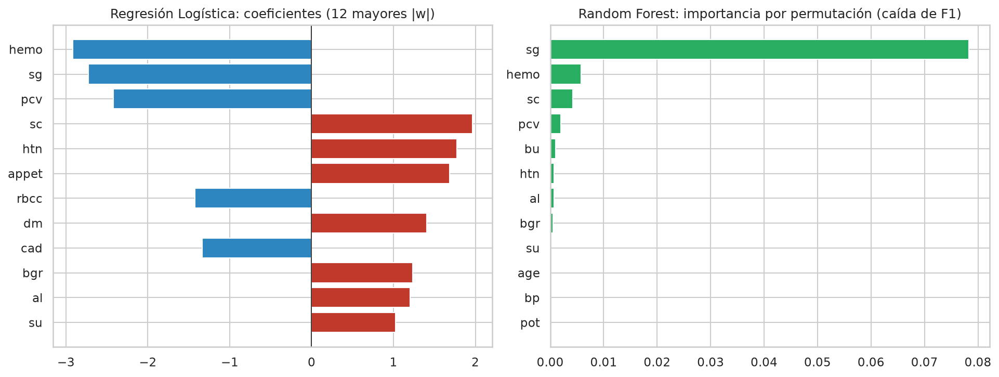
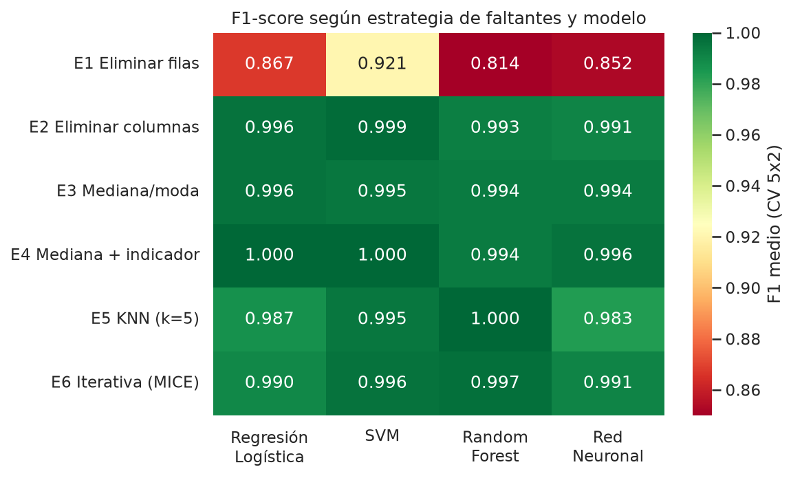

Detección de Enfermedad Renal Crónica con Machine Learning: el peso de los valores faltantes
Comparación de Regresión Logística, SVM, Random Forest y Red Neuronal sobre datos clínicos reales
Bethania Arami Avila Dominguez
Trabajo Práctico Integrador
Taller de Machine Learning – Proyecto II ML
Caso 3 · Dataset UCI ID 336
Septiembre 2026
1Problema
La enfermedad renal crónica (ERC) afecta a ~9 % de la población mundial [2] y es asintomática en etapas tempranas: suele diagnosticarse tarde.
Objetivo: clasificar pacientes con ERC (ckd = 1) y sin ERC (notckd = 0) a partir de análisis de sangre/orina de rutina y antecedentes.
En tamizaje, el error más costoso es el falso negativo → métrica clave: Recall (y F1).
Pregunta del caso:¿cómo afecta el tratamiento de los valores faltantes al desempeño final?
2Dataset
Chronic Kidney Disease – UCI ML Repository [1], Apollo Hospitals (India).
400pacientes
250ckd (62,5 %)
150notckd (37,5 %)
24variables (14 num. + 10 binarias)
10,5 %celdas faltantes
158filas completas (40 %)

Los faltantes no son aleatorios: un paciente con ERC tiene en promedio 3,6 datos faltantes y uno sano, 0,7. Entre las filas completas solo el 27 % es ckd.
3Exploración

Dos variables ya separan casi por completo las clases.
Hipertensión, diabetes, anemia y edema aparecen solo en pacientes con ERC.
Hay outliers clínicamente reales (creatinina de hasta 76 mg/dl) → se conservan.
4Metodología
Datos UCI (ucimlrepo)
→
Split 80/20 estratificado
→
Pipeline 0/1 · escalado · imputación
→
GridSearchCV 5-fold · F1
→
Test (n = 80) usado una sola vez
Todo el preprocesamiento se ajusta solo con el entrenamiento de cada fold → sin data leakage. Semilla fija (42) para que sea reproducible.
Modelo
Hiperparámetros explorados
Mejor configuración
Regresión Logística
C ∈ {0,01…100}, L1/L2, class_weight
C = 10, L2
SVM
lineal/RBF, C ∈ {0,1…100}, γ
RBF, C = 10, γ = scale
Random Forest
árboles, profundidad, hojas, max_features
200 árboles, sin límite
Red Neuronal (Keras)
capas (8) · (16, 8) · (32, 16); dropout 0/0,3
24→8→1, dropout 0,3
Red: ReLU + salida sigmoide, entropía cruzada binaria, Adam (lr = 0,003), batch 32, early stopping (paciencia 20).
5Resultados sobre Test
Modelo
Accuracy
Precision
Recall
F1
AUC
F1 CV
Regresión Logística
0,975
1,000
0,960
0,980
0,999
0,997
SVM (RBF)
0,988
1,000
0,980
0,990
1,000
0,997
Random Forest
1,000
1,000
1,000
1,000
1,000
0,995
Red Neuronal
0,963
1,000
0,940
0,969
0,995
0,995

Matrices de confusión (Test). Ningún falso positivo; todos los errores son enfermos no detectados (FN: 2 · 1 · 0 · 3).

Curvas ROC sobre Test: AUC ≥ 0,995 en los 4 modelos. Los modelos ordenan casi perfectamente a los pacientes; las diferencias aparecen solo en el umbral de 0,5.

Coeficientes de la Regresión Logística e importancia por permutación del RF: hemo, sg, pcv, al, sc, htn, dm, todas con sentido clínico.
6¿Y los valores faltantes?
Comparamos 6 estrategias con los mismos hiperparámetros (CV 5×2 sobre Training; se evalúa siempre sobre todos los pacientes).

Eliminar pacientes incompletos → F1 0,81–0,92 · Recall 0,69–0,86
Se pierde el 62 % del entrenamiento y la proporción de ckd cae de 62,5 % a 26,5 %: los modelos dejan de detectar enfermos. Cualquier imputación (mediana, KNN, MICE) → F1 ≥ 0,98.
Un modelo que solo sabe qué datos faltan ya logra AUC = 0,86: la ausencia de datos es informativa (efecto del protocolo de registro) → cuidado con explotarla.
7Discusión
Clases casi separables: los 4 modelos obtienen F1 CV ≥ 0,99, en línea con la literatura (RF 99,75 % [4]; SVM 98,5 % [5]).
Las diferencias en Test son de 1 a 3 pacientes (1 paciente = 1,25 pts de Accuracy): hay que leerlas con cautela.
La red neuronal extrapola mal con outliers extremos (creatinina 32 → P(ckd) ≈ 0); el RF es robusto.
Brecha train–CV ≤ 0,005 y CV ≈ Test → sin sobreajuste relevante.
8Conclusiones
La ERC se detecta con muy alta precisión usando análisis de rutina.
Random Forest fue el más adecuado: Recall = 1,00 (ningún enfermo sin detectar). La Regresión Logística es una alternativa más interpretable.
El tratamiento de faltantes pesó más que la elección del modelo: hay que conservar a todos los pacientes e imputar dentro del pipeline.
Limitaciones: 400 pacientes de un solo hospital; faltantes asociados a la clase; Test pequeño.
Trabajo futuro: validación externa, ajuste del umbral para priorizar el Recall, XGBoost, SHAP.
Referencias
[1] L. J. Rubini, P. Soundarapandian y P. Eswaran, "Chronic Kidney Disease," UCI ML Repository, 2015, doi: 10.24432/C5G020.
[2] KDIGO CKD Work Group, "KDIGO 2012 clinical practice guideline for the evaluation and management of CKD," Kidney Int. Suppl., vol. 3, no. 1, pp. 1–150, 2013.
[4] J. Qin et al., "A machine learning methodology for diagnosing chronic kidney disease," IEEE Access, vol. 8, pp. 20991–21002, 2020.
[5] H. Polat, H. Danaei Mehr y A. Cetin, "Diagnosis of chronic kidney disease based on SVM by feature selection methods," J. Med. Syst., vol. 41, no. 4, art. 55, 2017.
[7] L. Breiman, "Random forests," Mach. Learn., vol. 45, no. 1, pp. 5–32, 2001.
[11] D. B. Rubin, "Inference and missing data," Biometrika, vol. 63, no. 3, pp. 581–592, 1976.